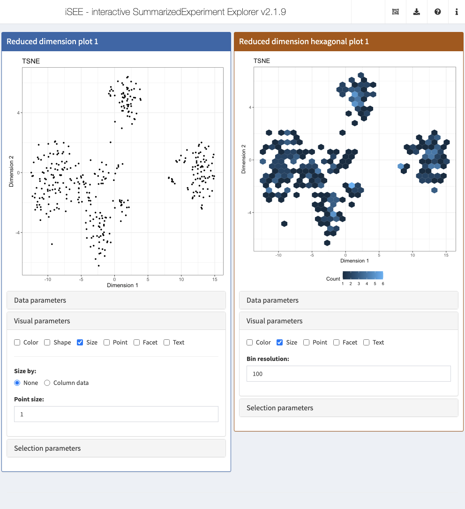

Chapter 4 Reduced dimension hexbin plot
4.1 Overview
In this example, we will create a panel class to show dimensionality reduction results using a hexbin plot.
The idea is to improve plotting speed for large datasets by binning points rather than showing each point individually.
Astute readers will note that the proposed class is the same as the ReducedDimensionHexPlot from iSEEu.
This chapter will describe the most relevant aspects of the development process to create a reasonably functional class.
4.2 Class basics
The choice of a parent class depends on the properties that we want that new panel class to start with.
In this case, to create a panel that inherits all the functionality of the ReducedDimensionPlot panel type, we simply define a new class that extends that class.
We will call the new class RedDimHexPlot, adding an extra parameter to control the resolution of the hexbins.
Any new slots should come with validity methods, as shown below.
library(S4Vectors)
setValidity2("RedDimHexPlot", function(object) {
msg <- character(0)
if (length(val <- object[["BinResolution"]])!=1L || val <= 0) {
msg <- c(msg, "'BinResolution' must be a positive number")
}
if (length(msg)) {
return(msg)
}
TRUE
})We specialize the initialize() method to provide a default for the new parameter.
We also define a constructor function to make it easier to create a new instance.
setMethod("initialize", "RedDimHexPlot",
function(.Object, BinResolution=100, ...)
{
callNextMethod(.Object, BinResolution=BinResolution, ...)
})
RedDimHexPlot <- function(...) {
new("RedDimHexPlot", ...)
}At this point, we can already create and use instances of this new panel class in iSEE apps.
However, that would not be very exciting as instances of this new panel class would behave exactly like the those of the parent ReducedDimensionPlot class.
Let’s define a few more methods to introduce some more relevant differences in behavior.
4.3 Setting up the interface
Currently, instances of our new class are indistinguishable from the parent ReducedDimensionPlot in the iSEE interface.
To differentiate our new class, we create a method for the .fullName() generic to show a different name.
While we’re here, we might as well give the panel a different color as well.
We also override aspects of the user interface to add a parameter to modify the bin resolution.
Here, we place a numericInput widget into the set of parameters controlling the size aesthetics.
setMethod(".defineVisualSizeInterface", "RedDimHexPlot", function(x) {
plot_name <- .getEncodedName(x)
tagList(
numericInput(
paste0(plot_name, "_", "BinResolution"), label="Bin resolution:",
min=1, value=x[["BinResolution"]], step = 1)
)
})Conversely, some other aspects of the UI are now irrelevant because we are no longer showing individual points. This includes the shape of the points, point-related downsampling and a variety of other aesthetic features. Thus, we hide or disable them to avoid cluttering the interface.
4.4 Creating the observers
The only new UI element we added was the widget to control the bin resolution.
Thus, the only new observer that needs to be added is the one that respects to this element.
Note the use of callNextMethod() to ensure that the observers for the parent class are also instantiated.
4.5 Generating the plot
We create a method for the .generateDotPlot() generic to implement our hexbinning strategy.
The contract for this generic guarantees that our method can immediately rely on the plot.data data-frame that is computed by methods defined for the parent ReducedDimensionPlot class.
We also use the precomputed aesthetic labels associated with each column of plot.data, while setting a fixed label "Count" for the fill aesthetic associated with the count of observation in each hexagonal bin.
library(ggplot2)
setMethod(".generateDotPlot", "RedDimHexPlot", function(x, labels, envir) {
plot_cmds <- list()
plot_cmds[["ggplot"]] <- "dot.plot <- ggplot() +"
# Adding hexbins to the plot.
plot_cmds[["hex"]] <- "geom_hex(aes(X, Y), plot.data) +"
plot_cmds[["labs"]] <- "labs(fill='Count') +"
plot_cmds[["labs"]] <- sprintf(
"labs(x='%s', y='%s', title='%s', fill='%s') +",
labels$X, labels$Y, labels$title, "Count"
)
plot_cmds[["theme_base"]] <- "theme_bw() +"
plot_cmds[["theme_legend"]] <- "theme(legend.position = 'bottom')"
# Adding a faceting command, if applicable.
facet_cmd <- .addFacets(x)
if (length(facet_cmd)) {
N <- length(plot_cmds)
plot_cmds[[N]] <- paste(plot_cmds[[N]], "+")
plot_cmds <- c(plot_cmds, facet_cmd)
}
# Adding self-brushing boxes, if they exist.
plot_cmds <- .addMultiSelectionPlotCommands(x,
envir=envir, commands=plot_cmds)
gg_plot <- .textEval(plot_cmds, envir)
list(plot=gg_plot, commands=plot_cmds)
})For brevity, we have omitted the more tiresome parts of coloring the bins with respect to assay values or metadata variables.
However, it is relatively straightforward to extend .generateDotPlot() to ensure that it responds to such choices as well as any other relevant parameters in x (e.g., font size).
4.6 In action
To demonstrate, we will load a small example dataset (Tasic et al. 2016) from the scRNAseq package.
This is provided as a SingleCellExperiment on which we compute the usual \(t\)-SNE plot.
library(scRNAseq)
sce <- ReprocessedAllenData(assays="tophat_counts")
set.seed(100)
library(scater)
sce <- logNormCounts(sce, exprs_values="tophat_counts")
sce <- runPCA(sce, ncomponents=4)
sce <- runTSNE(sce)We now set up an iSEE() instance with the hexbin and standard plots for showing reduced dimension results.
We can see the obvious visual differences in the aesthetics between plots as well as the changes to the user interface.
app <- iSEE(sce, initial=list(
ReducedDimensionPlot(Type="TSNE", VisualBoxOpen=TRUE, VisualChoices="Size", PanelWidth=6L),
RedDimHexPlot(Type="TSNE", VisualBoxOpen=TRUE, VisualChoices="Size", PanelWidth=6L)
))
References
Tasic, B., V. Menon, T. N. Nguyen, T. K. Kim, T. Jarsky, Z. Yao, B. Levi, et al. 2016. “Adult mouse cortical cell taxonomy revealed by single cell transcriptomics.” Nat. Neurosci. 19 (2): 335–46.